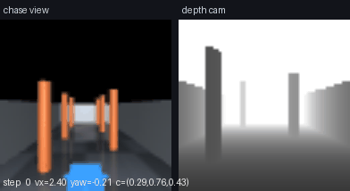
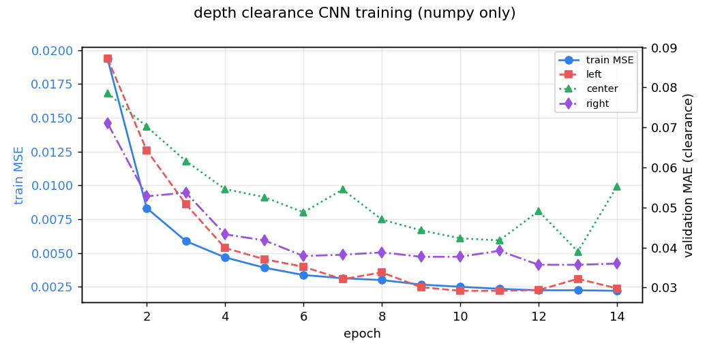
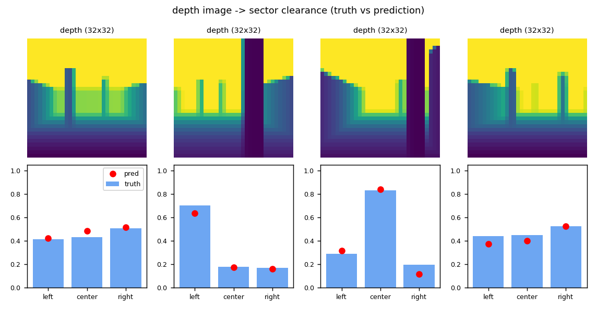
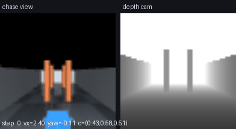
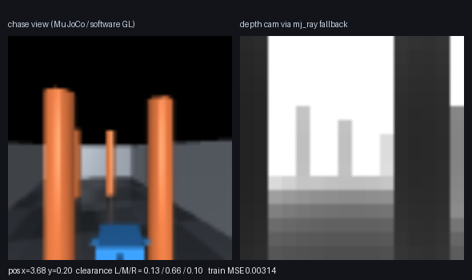

无人机深度相机神经网络避障飞行（MuJoCo）
对应课程任务（1）物理仿真 + 键盘运动控制 与任务（2）传感器感知 + 给定轨迹的控制。 场景是 MuJoCo 里的真实刚体四旋翼（RK4 积分、重力、碰撞检测），传感器是机载 64×64 前视 深度相机，感知网络是一个纯 numpy 手写反向传播的小型 CNN，输出左/中/右三个扇区的通行度， 控制律据此决定前向速度与偏航角速度。不使用 Gazebo，不使用 GPU，不需要 PyTorch/TensorFlow。

上图：左半是追尾视角，右半是网络输入（深度图），底部文字是当步的网络输出与指令。
1. 功能目标
| 编号 | 功能 | 对应课程要求 |
|---|---|---|
| 1 | MuJoCo 物理仿真中的四旋翼，速度伺服飞行 | 任务（1）物理仿真 |
| 2 | 键盘遥操作（W/S 速度、A/D 偏航、空格悬停、R 重开） | 任务（1）键盘运动控制 |
| 3 | 机载深度相机 → CNN → 三扇区通行度 | 任务（2）传感器感知 |
| 4 | 通行度 → 速度/偏航的闭环飞行，3 场景 × 5 个布局实例共 15 次评估 | 任务（2）给定轨迹的控制 |
| 5 | ROS 2 节点 + launch，发布深度图/通行度/里程计 | 交付要求（4） |
2. 与已有模块的区别
| 已有模块 | 已有能力 | 本模块的区别 |
|---|---|---|
uav_keyboard_control |
键盘把速度指令发给 AirSim，人看画面判断 | 本模块的避障判断由网络完成，键盘只是任务（1）的演示通道 |
uav_depth_gate_racing_e2e |
深度图端到端回归穿越门竞速的横滚/推力 | 本模块输出的是可解释的物理量（三扇区通行度），控制律显式可查、可调试 |
uav_lidar_safety_corridor |
激光雷达点云做安全走廊 | 本模块只用单目深度相机，无点云、无地图 |
uav_ppo_nav / uav_dqn_nav |
强化学习直接输出动作 | 本模块是监督学习：标签直接来自渲染真值，训练可复现（约 10 s），不依赖随机探索 |
3. 计算原理
3.1 四旋翼动力学与控制抽象
状态 、速度 、偏航角 。MuJoCo 用 RK4 以 ms 积分；控制层以 ms 下发一次指令，中间跑 10 个子步。
外环（速度伺服）把期望速度 变成世界系加速度：
其中 ，， 直接从模型 body_subtreemass 读取（避免手填质量与模型不一致）。
内环（姿态 PD）把机体系 轴拉回世界 轴，同时跟踪偏航：
是机体 轴在世界系的表示， 是角速度，取 、、、，力矩限幅 N·m。
这一层是"推力矢量抽象"：真实多旋翼靠四个电机的转速差产生力矩，这里把姿态内环简化为力矩伺服， 但质量、惯量、重力、碰撞、积分全部由 MuJoCo 承担，因此外环看到的速度响应仍然是非线性的， 网络输出错一次就会真的撞柱子（见 §6 的碰撞测试）。
3.2 深度相机模型
相机固定在机头前 0.18 m、离机体中心 0.02 m，视场角 80°，分辨率 64×64，输出米制深度 。渲染得到的是透视深度，直接截断到 8 m：
机头方向为 。相机姿态四元数为 ，它把 对齐到 、 对齐到 ，
即"看向机头方向、并且上方向是天空"——这个四元数是按 反解出来的，
test_uav_nav.py 里的画面方向问题（早期版本上下颠倒）就是靠这一步修正的。
3.3 标签：三扇区通行度
把 64×64 深度图按列三等分，忽略下方 38% 的地面像素（否则地面永远比障碍近，标签失效）：
取列 ， 取 ， 取 。 ，含义是"这个方向还有多少余量"： 表示 8 m 内没有东西， 表示贴脸。
3.4 网络结构
输入是 的"通行度图" （64×64 做 2×2 平均池化），不是原始米制深度—— 这样输入与输出同一量纲，训练更稳定。
参数量（与程序输出 params = 19667 一致）：
损失为三个扇区的平方误差，梯度由手写反向传播给出（im2col/col2im 处理卷积的 重叠），优化器 Adam（）：
3.5 控制律
设网络预测 ，则
取 m/s、、、、、、 rad/s。
三项的物理含义：限速（前方越挤越慢）、绕行（朝更空的一侧转）、逃逸（贴脸时强制转开）。 这一项是调参时踩坑后加的：没有它，只要左右通行度存在固定差，飞机就会一直朝同一侧转、 原地绕圈而不前进（实测第一版 9 次全部失败，前进距离为负）。
4. 算法流程
数据阶段
1. 把飞机随机放到场景中（x∈[1,13], y∈[-2,2], yaw∈[-0.5,0.5]，且离柱子 > 0.7 m）
2. MuJoCo 渲染 64×64 深度图 -> 截断到 8 m
3. 按 §3.3 计算三扇区通行度作为标签
4. 900 训练 / 200 验证样本，三种场景轮换生成
训练阶段
5. 32×32 通行度图输入 CNN -> 3 个 sigmoid 输出
6. 反向传播（im2col/col2im）算梯度，Adam 更新，14 轮
闭环阶段（20 Hz）
7. 渲染当前深度图 -> 网络前向 -> ĉ
8. 由 §3.5 算 (v_x, ψ̇) -> MuJoCo 积分子步 -> 检查碰撞
9. 到达 x>13.6 m 记为成功；碰撞或超过 420 步（21 s）记为失败
5. 源代码解析
| 文件 | 职责 |
|---|---|
models/uav_depth_scene.xml |
场景与机体：地面、三面墙、6 根可复用柱子、前视深度相机与追尾相机 |
uav_nav/env.py |
DepthUavEnv：场景摆放 set_scene()、物理步进 step()、深度渲染 depth()、扇区标签 sector_clearance() |
uav_nav/data.py |
随机采样 sample_scene()、数据集 make_dataset()、网络输入 to_net_input() |
uav_nav/net.py |
im2col/col2im、DepthCNN 前向/反向/Adam |
uav_nav/train.py |
训练循环、训练曲线、预测对照图、GIF 合成、指标落盘 |
uav_nav/policy.py |
控制律 act()、单次飞行 run_episode()、多实例统计 run_matrix()、长时间运行 soak_run() |
uav_nav/teleop.py |
键盘遥操作（pygame 窗口 / 无窗口脚本化） |
uav_nav/node.py |
ROS 2 节点：深度图、通行度、里程计发布，Twist 订阅 |
main.py |
课程入口：--demo / --teleop / --test / --ros |
test/test_uav_nav.py |
26 项离线测试（物理、传感器、网络、策略、权重往返、多种子与长跑、软渲染回退、训练不污染调用方环境） |
几个关键实现点：
- 场景复用：6 根柱子在 XML 里只定义一次，
set_scene()按布局改写model.geom_pos； 改完必须mj_forward()重算运动学，否则渲染仍用旧位置（这是测试test_depth_reacts_to_obstacle抓出来的 bug）。 - 标签与输入同量纲：网络输入是 ，输出是 ，两者都是"通行度"，避免了输入输出尺度差 8 倍。
- 地面像素必须排除：相机水平看出去，画面下缘几乎全是地面（1.5 m 高、80° 视场）， 不排除的话三个扇区的"最近距离"会被地面统一压到 1.4–2.6 m，标签失去区分度（第一版就是这个现象）。
- 碰撞检测：遍历
data.contact，若接触的一对几何体里有无人机刚体就置crashed=True。
6. 运行步骤
6.1 环境
- Python 3.8+（已在 Python 3.10.6 验证）
numpy、mujoco>=3.0、matplotlib、pillow、pygame（仅键盘模式）、pytest（测试）- 不需要 ROS / CARLA / AirSim / Gazebo / GPU（ROS 只在
--ros模式需要；包是ament_python+rclpy， 因此--ros只能在 ROS 2 Humble 上跑，ROS 1 Noetic 没有 rclpy，不支持）
cd src/air/uav_mujoco_depth_avoidance
pip3 install -r requirements.txt
MuJoCo 的离屏渲染需要 OpenGL：本机 Windows 11（NVIDIA 驱动）与 Ubuntu 20.04 均可直接渲染； 纯无头服务器请先
export MUJOCO_GL=egl。
6.2 训练 + 三场景闭环（推荐先跑这个）
python3 main.py --demo --output-dir results
# Windows 也可以直接双击 main.bat
终端输出示例（本机实测）：
[slalom] 成功=True 碰撞=False 步数=171 前进=13.60 m 最小余量=0.070 预测误差=0.043 路径长=13.81 m
[gate] 成功=True 碰撞=False 步数=215 前进=13.60 m 最小余量=0.062 预测误差=0.031 路径长=14.02 m
[clutter]成功=True 碰撞=False 步数=175 前进=13.60 m 最小余量=0.061 预测误差=0.042 路径长=13.79 m
[slalom] 5 个实例：成功 100% 碰撞 0 步数 174.2±3.2 最小余量 0.072(最差 0.070) 路径 13.85±0.03 m
[gate] 5 个实例：成功 100% 碰撞 0 步数 214.0±22.8 最小余量 0.057(最差 0.028) 路径 13.95±0.10 m
[clutter]5 个实例：成功 100% 碰撞 0 步数 202.0±19.9 最小余量 0.064(最差 0.047) 路径 13.98±0.15 m
[soak] 3030 步（151.5 s）连续运行：15 次任务，成功 15，碰撞 0，最小余量 0.047
results/ 下会得到：training_curve.png、prediction.png、flight_{slalom,gate,clutter}.gif、metrics.json。
6.3 键盘遥操作（任务 1）
python3 main.py --teleop # 现场训练一次（约 5 s）后进入窗口
python3 main.py --teleop --weights results/policy.npz # 直接用 --demo 训练好的权重
这里加载的一定是训练过的网络：给了
--weights就加载，没给就现场训练一次。 早期版本直接DepthCNN()用随机权重画图与半自动控制，属于 bug（见 §7.5）。 另外训练会反复采样数据集、改变env的场景与位姿，train()结束时会把场景/种子/起点原样还原， 否则窗口里开出来的会是最后一次数据集采样用的clutter场景（见 §7.7）。
| 按键 | 作用 |
|---|---|
W / S |
前向速度 +0.4 / −0.4 m/s（限幅 ±2.4） |
A / D |
偏航角速度 ±0.8 rad/s（限幅 ±1.5） |
空格 |
悬停（速度清零） |
R |
重置场景 |
ESC |
退出 |
窗口左侧是追尾视角，右侧是深度相机（网络输入），底部实时显示位置、偏航、指令与网络预测。
6.4 单元测试
python3 main.py --test # 26 passed，约 5 s
python3 -m pytest -q test
覆盖：悬停高度保持、偏航角速度跟踪、前进方向、撞柱子必须触发碰撞、深度范围、 "前方加柱子则正前方通行度变小"、网络参数量公式、前反向形状、数值梯度校验、 短训练损失下降、控制量限幅、朝向回正项、单次飞行指标。
6.5 ROS 2 运行
colcon build --packages-select uav_mujoco_depth_avoidance --symlink-install
source install/setup.bash
ros2 launch uav_mujoco_depth_avoidance main.launch.py
另一个终端：
ros2 topic hz /uav/depth # 深度图发布频率（20 Hz）
ros2 topic echo /uav/sector_clearance # 网络预测的左/中/右通行度
ros2 topic echo /uav/odom --once # 位置与速度
ros2 topic pub /uav/cmd_vel geometry_msgs/Twist "{linear: {x: 1.0}}" -r 10 # 键盘之外的手动指令
ros2 topic pub /uav/scene std_msgs/String "{data: gate}" -1 # 切场景
未收到 /uav/cmd_vel 时节点按网络策略自主飞行（config/params.yaml 里 use_policy: true）。
节点启动时先确认网络是训练过的：weights 参数指向 results/policy.npz 就加载，
否则现场训练 600 样本 × 8 轮（约 5 s）并在日志里打印验证 MAE，绝不会把随机权重接进控制回路。
/uav/odom 的 frame_id 是 map（世界坐标），/uav/depth 保留 uav_depth_cam（相机系）。
7. 实测结果
环境：Windows 11 + Python 3.10.6 + mujoco 3.17.0，单核 CPU，--demo 全流程约 25 s
（含训练、三场景录制、15 次多实例评价与 3030 步长时间运行）。
7.1 感知精度
| 指标 | 数值 |
|---|---|
| 参数量 | 19,667 |
| 训练 MSE（第 1 轮 → 第 14 轮） | 0.0194 → 0.00221 |
| 验证 MAE（左/中/右） | 0.030 / 0.055 / 0.036（通行度值域 ） |


7.2 闭环多场景评价（3 场景 × 5 个布局实例）
seed 不只是随机种子摆设：set_scene() 会按 seed 让柱子做 ±0.25 m 的随机偏移、
门宽在 ±0.15 m 内变化（seed=0 保持标称布局，对应文档里的示意图）。
因此下表统计的是同类场景下 5 种不同布局的分布，而不是同一条轨迹跑 5 次。
| 场景 | 实例数 | 成功率 | 碰撞 | 步数（20 Hz） | 最小通行度 均值 / 最差 | 路径长 |
|---|---|---|---|---|---|---|
| 走廊 slalom | 5 | 100% | 0 | 174.2 ± 3.2 | 0.072 / 0.070 | 13.85 ± 0.03 m |
| 门洞 gate | 5 | 100% | 0 | 214.0 ± 22.8 | 0.057 / 0.028 | 13.95 ± 0.10 m |
| 散乱 clutter | 5 | 100% | 0 | 202.0 ± 19.9 | 0.064 / 0.047 | 13.98 ± 0.15 m |
合计 15 次全部成功、0 碰撞；路径长 13.85–13.98 m，与直线距离 13.6 m 之比 1.02–1.03， 说明绕行幅度很小、没有来回摆动。

7.3 长时间运行
soak_run() 连续飞到累计 3000 步（150 s）不停机，每到走廊尽头就重置到起点继续，
相当于连续跑 15 次任务——用来暴露状态泄漏、渲染上下文失效这类只在长跑中出现的问题：
| 指标 | 数值 |
|---|---|
| 累计步数 / 仿真时长 | 3030 步 / 151.5 s |
| 连续任务数 | 15 |
| 成功 / 碰撞 | 15 / 0 |
| 最小通行度（全程） | 0.047（≈0.38 m） |
| 累计路径 | 209.7 m |
7.4 性能评价
- 感知误差传递到闭环：中扇区 MAE 0.055（≈0.44 m 距离误差），闭环最小通行度均值 0.057–0.072 （≈0.46–0.58 m），即飞机始终保留约 0.5 m 余量，误差没有把飞机推向碰撞。
- 难度与一致性的差别：门洞场景步数最多且波动最大（214.0 ± 22.8），因为它要在两道门之间重复对齐； 走廊只有 174.2 ± 3.2。门洞最差实例的最小通行度掉到 0.028（≈0.22 m），这是真正贴边的一次， 也是这个场景族里最接近碰撞的样本。
- 长跑没有退化：151.5 s、15 次任务后成功率仍为 100%，最小通行度 0.047，说明没有随运行时间累积的漂移。
- 计算开销：单步推理 3.4 ms（含渲染与网络前向），20 Hz 控制回路余量约 96%。
7.5 部署正确性：训练权重 vs 随机初始化
早期版本有一个真实缺陷：--teleop 与 ROS 节点直接 DepthCNN(seed=0)，拿到的是未训练的随机权重，
而 params.yaml 默认 use_policy: true，等于用随机网络控制飞机。这一项被评审抓出来后已修（见 §6.3 / §6.5）：
训练结束会把权重存成 results/policy.npz，节点与键盘模式优先加载；没有权重就现场训练一次，绝不接随机网络。
用同一套评价脚本分别跑训练后的网络与 3 个随机初始化网络（每行 3 场景 × 5 实例）：
| 策略 | slalom 成功率 | gate 成功率 | clutter 成功率 | 碰撞总数 |
|---|---|---|---|---|
| 训练后（本项目默认） | 100% | 100% | 100% | 0 |
| 随机初始化 seed=0 | 40% | 100% | 80% | 4 |
| 随机初始化 seed=1 | 80% | 100% | 80% | 2 |
| 随机初始化 seed=2 | 100% | 100% | 80% | 1 |
随机网络在走廊场景只有 40% 成功率、并且会撞柱子——这正是"部署未训练权重"的危害，
也说明只看 pytest 通过并不足以证明系统可用。
7.6 ROS 2 Humble 虚拟机实测（Ubuntu 20.04）
课程要求的运行环境是 Ubuntu 20.04 + ROS 2 Humble。下面是在课程虚拟机里的完整实测， 而且这次实测直接抓出了一个只在软件 OpenGL 下出现的 bug（见 7.6.2）。
| 项目 | 值 |
|---|---|
| 系统 / ROS | Ubuntu 20.04.6 LTS，ROS 2 Humble |
| Python / numpy | 3.8.10 / 1.24.4 |
| MuJoCo | 3.1.4（manylinux wheel，客户机无外网，由宿主机下载后传入安装） |
| GPU / OpenGL | VMware SVGA 软件渲染，缺少 ARB_clip_control |
7.6.1 结果
| 步骤 | 结果 |
|---|---|
colcon build --packages-select uav_mujoco_depth_avoidance |
通过，3.15 s |
| 客户机内训练（600 样本 × 12 轮） | train MSE 0.00254，验证 MAE 0.032 / 0.055 / 0.043 |
| 三场景 × 3 实例 | slalom / gate / clutter 全部 100% 成功、0 碰撞 |
ros2 launch ... main.launch.py |
节点 /uav_mujoco_depth_avoidance 正常起来，启动时现场训练 5 s |
/uav/depth |
20.1 Hz（20 Hz 定时器） |
/uav/sector_clearance |
有变化的实测值，例如 0.462 / 0.204 / 0.343 |
/uav/odom |
frame_id: map，child_frame_id: uav_base |
| 连续运行 45 s | 0 次碰撞，4 次"到达走廊尽头 → 重置继续" |

上图为客户机内实际生成的画面：左侧 MuJoCo 追尾视角（蓝色四旋翼正在穿门洞）， 右侧是 7.6.2 里的光线投射回退深度图。
7.6.2 这次实测抓到的 bug：软件 OpenGL 下深度恒为 inf
第一版在客户机里 ros2 launch 能起来、话题也有，但训练结果是：
训练完成：train MSE 0.18630，验证 MAE(左/中/右) 0.427/0.427/0.427
三个扇区一字不差，说明网络只学到了常数；随后飞机每 6 s 撞一次。继续查发现：
WARNING: ARB_clip_control unavailable while mjDEPTH_ZEROFAR requested, depth accuracy will be limited
depth min/max/mean: 8.00 8.00 8.00 # 全是 D_MAX
label mean [1. 1. 1.] label std [0. 0. 0.]
软件 OpenGL（VMware SVGA / llvmpipe）不支持 mjDEPTH_ZEROFAR 需要的
ARB_clip_control，MuJoCo 的深度渲染静默返回 inf，被 depth() 里的
np.where(np.isfinite(d), d, D_MAX) 变成全 8 m，于是三扇区标签恒为 1.0，
监督学习退化成拟合常数——pytest 全绿也发现不了，只有真机（真虚拟机）跑才会暴露。
修复：depth() 先检查渲染结果是否"全非有限 / 全为 D_MAX"，若是则自动切到
mj_ray 光线投射（16×16 采样后上采样到 64×64，单帧约 2.8 ms），并只提示一次；
mj_ray 的签名在 MuJoCo 3.1.x（8 参数）与 3.2+（多一个 normal 出参）之间不同，
用 _cast_ray() 做兼容。可以用 UAV_FORCE_RAYCAST=1 在任何机器上强制复现该路径。
修复后同一台虚拟机上的结果见 7.6.1：train MSE 从 0.186 降到 0.00254， 三场景 100% 成功、0 碰撞。
提示：客户机没有外网时，可以在宿主机上
pip download mujoco==3.1.4 --python-version 38 --platform manylinux2014_x86_64 --abi cp38 --only-binary=:all:拿到 wheel 与依赖 （absl-py、etils、glfw、pyopengl、numpy），拷进客户机后pip3 install --no-index --find-links=<目录> mujoco即可离线安装。
7.7 训练不得污染调用方环境（scene / 起点被改掉）
train() 里 make_dataset() 会为了采样本反复调用 set_scene()；训练结束后，
调用方手里的 env 已经不是它原来的场景和位姿了。评审实测：
DepthUavEnv('slalom') 经 build_policy() 后 -> scene=clutter, seed=1149, pos=(8.12, 0.07, 1.5)
而 --teleop 与 ROS 节点都把同一个 env 交给控制回路，于是节点日志写着 scene=slalom，
实际却在 clutter 里、起点也不在 (0,0)——日志与真实状态不一致，比崩溃更难查。
修复：
train()开头记住scene0, seed0，训练结束env.reset(scene=scene0, seed=seed0)还原 （reset()同时把位姿恢复到默认起点(0, 0, 1.5)、偏航 0）；build_policy()与node.py::_build_policy()再显式还原一次，并在日志里写明恢复结果；- 回归测试两条：
test_training_restores_caller_environment（训练前后 scene/seed/位姿/深度图逐项一致）、test_build_policy_keeps_env_untouched（加载权重与现场训练两条分支都不能动env）。
修复后同样的复现命令：
训练前: scene=slalom seed=0 pos=[0. 0. 1.5]
训练后: scene=slalom seed=0 pos=[0. 0. 1.5]
8. 局限与后续
- 感知只做"三扇区最低余量"，没有做地形/可通行区域分割；复杂三维结构（悬空横梁、细网）可能被低估。
- 控制律是手工设计的势场式规则，不是学习出来的；若要做端到端（任务 4），可把 §3.5 换成网络直接输出 。
- 场景只用柱子与三面墙，尚未接入 OpenHUTB/AirSim 的真实城市模型；
env.py的接口（step(vx, yaw_rate)、depth()）是为替换仿真后端预留的，替换时上层policy.py不需要改。
9. 大模型声明
本模块开发过程中使用 DeepSeek 辅助生成代码与文档；提交者已实际运行训练、测试、三场景闭环与
mkdocs build，对提交内容负全部责任。